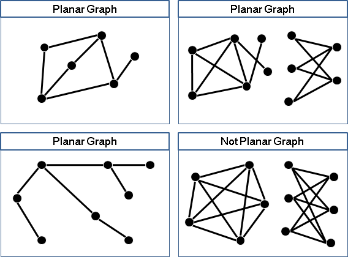
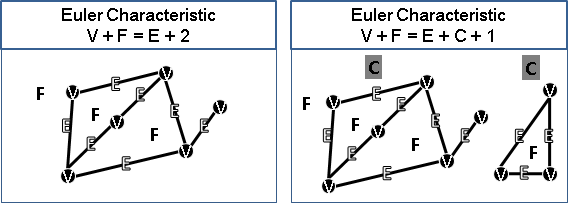
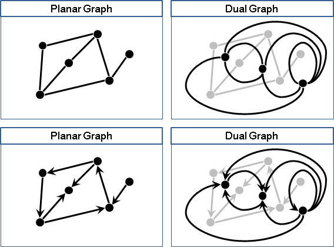
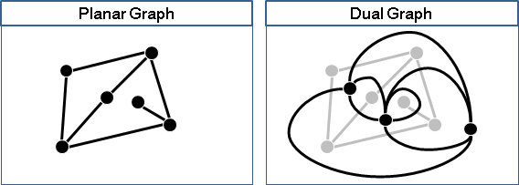
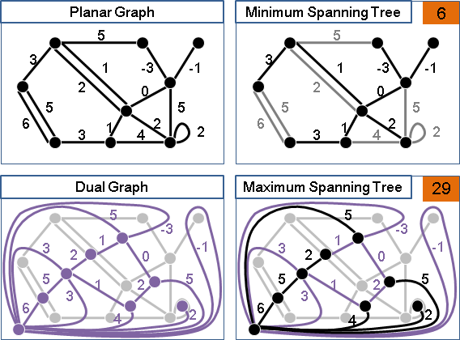

Planar Graph
Planar Graph
一張圖，畫在平面上，點不重疊、邊不交叉，稱作「平面圖」。
先前在「Graph」提及了同構的概念：一張圖可以挪動點與邊。一張平面圖，就算挪動點與邊，使得點重疊、邊交叉，也還是平面圖。反過來說，一張圖，畫在平面上，挪動點與邊，使得點不重疊、邊不交叉，也算是平面圖。
那有沒有球面圖呢？那有沒有立體不打結圖呢？應該有吧。
Euler Characteristic
凡是點、邊、面這些基本元件之間的數量關係，就稱作Euler Characteristic。歐拉是第一位想到這件事情的數學家。
平面圖當中，則有V+F=E+2這個數量關係，其中V代表點數、E代表邊數、F代表面數。
進階版本是V+F=E+C+1，其中C代表連通分量數目。
你會證明嗎？:-)
UVa 10178
Dual Graph
設計平面圖演算法時，「對偶圖」是相當重要的工具。
一張平面圖當中，面與面的相鄰關係表示成一張圖，就得到對偶圖。對偶圖當中，面與面的相鄰關係表示成一張圖，就得到原來的平面圖。
原圖和對偶圖可以互相轉換成為對方。原圖和對偶圖擁有相等的資訊量，只是以不同形態呈現。
有向圖的情況比較特別：對偶圖從右往左穿越邊；橋與自環無法判斷左右，對偶圖以逆時針方向穿越邊。此定義亦可改成從左往右、順時針。
運用同構的概念，挪動原圖的點與邊，就會得到另外一種對偶圖。對偶圖可能有許多種，而且不見得同構！
由於缺乏優美規律，因此談論對偶圖時，習慣忽略同構。

最特別的對偶圖例子，就是橋（bridge）與自環（loop）。舉例來說，原圖是一棵樹，對偶圖是一個點以及一大堆自環；各種樹對應各種自環包覆方式。
由於缺乏優美規律，因此談論對偶圖時，習慣忽略橋與自環。原圖凡是無橋、無自環，對偶圖即是無橋、無自環。
圖論當中，有許多對偶方式。最名聞遐邇的對偶方式，就是平面對偶。於是Dual Graph這個名詞，就留給了平面對偶所得到的圖；其他對偶方式則有其他名稱。
UVa 11706
Planar Graph資料結構
http://en.wikipedia.org/wiki/Doubly_connected_edge_list
Planar Graph Recognition（Boyer & Myrvold, 2004）
http://en.wikipedia.org/wiki/Planarity_testing
要判定一張圖是不是平面圖，老一輩將之轉換成排列順序問題，運用PQ Tree或PC Tree資料結構求解，規則複雜難以實作。
後來出現簡易的演算法，運用Depth-first Search就能完成，時間複雜度O(V+E)：
http://jgaa.info/accepted/2004/BoyerMyrvold2004.8.3.pdf
UVa 10768
Mininum Spanning Tree（Matsui, 1994）
原圖的最小生成森林以外的邊，就是對偶圖的最大生成樹。
原圖的每一種最小生成森林、對偶圖的每一種最大生成樹，一一對應。
證明：一、視樹為牆。樹無環，故面有出口、面皆連通。二、生成樹須連通，故任兩面僅能有一條通路，否則兩條以上通路將切斷生成樹連通。三、生成森林無須連通，但是兩生成子樹的兩面，其通路必經最外面（可想成樹根），故任兩面仍僅有一條通路。四、承一二三，所有面連通、任兩面只有一條通路，即是生成樹！五、牆最小，非牆則最大，故得最大生成樹。
演算法原理類似「Borůvka's Algorithm」，同時考慮原圖和對偶圖，同時計算原圖的最小生成樹、對偶圖的最大生成樹。
一、隨時刪除所有自己連向自己的邊，也就是刪除所有自環。 二、重複以下步驟V次： 口、原圖以及對偶圖，一定找得到一個度數小於4的點，稱作a點。 口、如果a點在原圖上： 甲、原圖a點所屬的生成子樹，找權重最小的聯外邊ab。 乙、原圖的最小生成樹有邊ab。 丙、原圖收縮邊ab、對偶圖刪除邊ab。兩圖隨時保持對偶。 口、如果a點在對偶圖上： 甲、對偶圖a點所屬的生成子樹，找權重最大的聯外邊ab。 乙、對偶圖的最大生成樹有邊ab。 丙、對偶圖收縮邊ab、原圖刪除邊ab。兩圖隨時保持對偶。
因為度數小於4，找最小鄰邊的時間複雜度就下降為O(1)，總時間複雜度就下降為O(V+E)，到達了下限。
平面圖：V+F=E+C+1 原圖以及對偶圖的總度數：2E + 2E' = 4E 原圖以及對偶圖的總點數：V + V' = V + F = E+C+1 原圖以及對偶圖，一個點的平均度數：4E / (E+C+1) < 4 原圖以及對偶圖，一定至少有一個點，其度數小於等於平均度數，也就是小於4。
由於要維護原圖和對偶圖的資料結構，還要隨時找到度數小於4的點，所以此演算法的實際運行速度，遠比一般圖的最小生成樹演算法來得慢。
儘管此演算法並不實用，但是此演算法開啟了一條道路，讓我們知道各種圖論問題一旦搬到平面圖上，只要運用對偶圖、度數等等性質，時間複雜度就會有很大的改進。
至於有向圖的版本，我不知道有沒有人研究。
Shortest Path
http://courses.csail.mit.edu/6.889/
ICPC 6438
Minimum Cut / Maximum Flow
http://www.cnblogs.com/yejinru/archive/2013/04/19/3031731.html
Klein Multiple-source shortest paths in planar graphs build O(nlogn) query O(logn) Multiple-Source Single-Sink Maximum Flow in Directed Planar Graphs in O(diameter * nlogn) Time http://arxiv.org/pdf/1104.4728.pdf
ICPC 3661
Clique
http://tmtacm.blogspot.tw/2016/01/i.html
備忘
平面圖判定 O(n) 最小生成樹 O(n) st最短路徑(無負邊) O(n * sqrt(log(n))) st最短路徑(負邊) O(n^1.5) st最大割 O(n^1.5 * log(n)) st最小割 = st最短路徑 st最大流 = st最短路徑 最小割 = ∅-join 最小環基底 = Gomory–Hu tree st嚴格次短路徑 O(n^3) 完美匹配計數 FKT algorithm G is Eulerian iff dual(G) is bipartite.